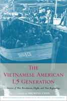

<body bgcolor="#FFFFFF" text="#000000" link="#0000FF" vlink="#CC0000" alink="#CC0000"><center><hr width="350" size="1" align="center" noshade>Riveting stories by refugees who fled Vietnam<hr width="350" size="1" align="center" noshade><p><a href="https://cdcshoppingcart.uchicago.edu/Cart/ChicagoBook.aspx?ISBN=9781592135004&&PRESS=temple" target="_top">Buy this book!</a> | <a href="https://cdcshoppingcart.uchicago.edu/Cart/Cart.aspx?PRESS=temple" target="_top">View Cart</a> | <a href="https://cdcshoppingcart.uchicago.edu/Cart/Cart.aspx?PRESS=temple" target="_top">Check Out</a></p><p></p></center><!--none//--><h1>The Vietnamese American 1.5 Generation</h1>
<H2>Stories of War, Revolution, Flight, and New Beginnings</H2>
<H2>With contributions by students at the University of California</H2>
<h3>edited by Sucheng Chan</h3>
<P>cloth 1-59213-500-5 $80.50, Jun 06, <FONT COLOR=#990033>Available</FONT>
<br>paper 1-59213-501-3 $31.95, Jun 06, <FONT COLOR=#990033>Available</FONT>
<br>Electronic Book 1-59213-502-1 $31.95 <FONT COLOR=#990033>Available</FONT>
<BR> 344 pp
6x9
</P><BLOCKQUOTE><I>"Sucheng Chan has given us another gift of history! Moving away from the popular casting of Vietnamese refugees as objects of sympathy, </i>The Vietnamese American 1.5 Generation<i> is bursting with riveting stories of lives that did emerge from and out of the ruins of war, and 'peace.'"</i>
<br>&#151;<b>Yen Le Espiritu</b>, Professor of Ethnic Studies, University of California, San Diego<i></I></BLOCKQUOTE>
<p>The conflict that Americans call the "Vietnam War" was only one of many incursions into Vietnam by foreign powers. However, it has had a profound effect on the Vietnamese people who left their homeland in the years following the fall of Saigon in 1975. Collected here are fifteen first-person narratives written by refugees who left Vietnam as children and later enrolled as students at the University of California, where they studied with the well-known scholar and teacher Sucheng Chan. She has provided a comprehensive introduction to their autobiographical accounts, which succinctly encompasses more than a thousand years of Vietnamese history. The volume concludes with a thorough bibliography and videography compiled by the editor.
<p>While the volume is designed specifically for today's college students, its compelling stories and useful history will appeal to all readers who want to know more about Vietnam and especially about the fates of children who emigrated to the U.S.
<BR>&nbsp;<h2>Excerpt</h2><P>Excerpt available at <a href="http://www.temple.edu/tempress">www.temple.edu/tempress</a></p>
<BR>&nbsp;<h2>Reviews</h2>
<p><i>"The combination of first-person narratives with the historical overview provided by Chan as well as the bibliography make </i>The Vietnamese American 1.5 Generation<i> very useful and quite distinct from other works. The process of teaching/learning and knowledge production that Chan describes is characteristic of the best in the Asian American Studies field, not only demonstrating why the field is important, but also how the documentation of lived experience by students with their families/communities generates new resources for research and academic curriculum/program development. Chan presents this process in a compelling, personal way; at the same time, she is implicitly modeling what should be the expected pedagogical practice in Asian American Studies."</i>
<br>&#151;<b>Peter Kiang</b>, Professor of Education and Director, Asian American Studies Program, University of Massachusetts Boston
<p><i>"[T]he autobiographical accounts reveal key themes in the Vietnamese American experience and address important historiographical topics...this book contributes to refugee history, an important if understudied aspect of the immigrant experience. Includes a useful bibliography and videography. Highly recommended."</i>
<br>&#151<b><i>Choice</i></b>
<p><i>"Sucheng Chan’s groundbreaking book boldly addresses issues within American Studies that remain largely ignored or avoided. The book may focus on Vietnamese Americans, yet it poignantly and explicitly reflects upon Asian American Studies as a field of study. Chan addresses the field’s tensions between capitalism and Communism and between pedagogy and politics—all while highlighting the complexities of Vietnamese American experiences…The student-written narratives in the book are themselves a refreshing and unique approach for Vietnamese American Studies and Asian American Studies….This book will be valuable to both trained scholars and novice students of Vietnamese Americans."</i>
<br>&#151<b><i>The Journal of American Ethnic History</i></b>
<BR>&nbsp;<h2>Contents</h2><P>
<p>Preface
<br>Acknowledgments
<br>Vietnamese Names
<p><b>Part I: Historical Overview</b>
<br>1. Vietnam before the Mid-Nineteenth Century
<br>2. French Colonial Rule and Vietnamese Resistance
<br>3. Communism and Nationalism
<br>4. The 1945 August Revolution
<br>5. The First Indochina War
<br>6. The American Involvement in Vietnam
<br>7. The Fall of Saigon and Its Aftermath
<br>8. The Plight of the Ethnic Chinese in Vietnam
<br>9. An International Refugee Crisis
<br>10. Ending the Indochinese Refugee Exodus
<p><b>Part II: Stories of War, Revolution, Flight, and New Beginnings</b>
<br>11. A Tragedy: From Vietnam to America
<br>12. A Journey Called Freedom
<br>13. My Autobiography
<br>14. How It Feels to Be an Asian American
<br>15. Integrity through Change
<br>16. A Place to Call Home
<br>17. The Coming of Age of a Chinese-Vietnamese American
<br>18. My Father and I
<br>19. The Pain in My Heart
<br>20. The Never-Ending Struggle
<br>21. An Unfinished Journey
<br>22. From Vietnam to Germany to the United States
<br>23. Vietnam Memories in America
<br>24. My Transition to Being an Asian American
<br>25. At That Time in My Life
<p>Epilogue
<br>Notes
<br>Selected Bibliography
<br>Selected Videography
<br>Index
</P><BR>&nbsp;<H2>About the Author(s)</H2>
<P><b>Sucheng Chan</b> is Professor Emerita of Asian American Studies and Global Studies at the University of California, Santa Barbara. She is the recipient of many prizes and author or editor of numerous books, including: <i><a href="1824_reg.html" target="_top">Chinese American Transnationalism: The Flow of People, Resources, and Ideas Between China and America During the Exclusion Era</a></i> (Temple) and <i><a href="1332_reg.html" target="_top">Claiming America: Constructing Chinese American Identities During the Exclusion Era</a></i> (Temple, co-edited with Scott Wong), which won the award for Outstanding Book in History and Social Sciences from the Association for Asian American Studies.</P>
<BR><H2>Subject Categories</H2>
<p><A HREF="/tempress/asian_amer.html" TARGET="_top">Asian American Studies</a>
<BR><A HREF="/tempress/history.html" TARGET="_top">History</a>
<BR><A HREF="/tempress/race.html" TARGET="_top">Race and Ethnicity</a>
</p>
<BR><h2 class="inpageheading">In the series</H2>
<P><I><a href="http://www.temple.edu/tempress/asam_history.html" onMouseOver="window.status='Click for other books in this series!'; return true;" onMouseOut="window.status=''; return true;" target="_top">Asian American History and Culture</a></i>, edited by K. Scott Wong, Linda Trinh Võ, and Cathy Schlund-Vials.
</p><p>Founded by Sucheng Chan in 1991, the <I>Asian American History and Culture</I>, series has sponsored innovative scholarship that has redefined, expanded, and advanced the field of Asian American studies while strengthening its links to related areas of scholarly inquiry and engaged critique. Like the field from which it emerged, the series remains rooted in the social sciences and humanities, encompassing multiple regions, formations, communities, and identities. Extending the vision of founding editor Sucheng Chan and emeriti editor Michael Omi and David Palumbo-Liu, series editors K. Scott Wong, Linda Trinh Võ, and Cathy Schlund-Vials continue to develop a foundational collection that embodies a range of theoretical and methodological approaches to Asian American studies.</p>
<p align="center"><a href="https://cdcshoppingcart.uchicago.edu/Cart/ChicagoBook.aspx?ISBN=9781592135004&&PRESS=temple" target="_top">Buy this book!</a> | <a href="https://cdcshoppingcart.uchicago.edu/Cart/Cart.aspx?PRESS=temple" target="_top">View Cart</a> | <a href="https://cdcshoppingcart.uchicago.edu/Cart/Cart.aspx?PRESS=temple" target="_top">Check Out</a></p><p><font face="Arial" size="1"><a href="copyright.html" onMouseOver="window.status='Web Copyright Policy';return true;" onMouseOut="window.status=''" title="Web Copyright Policy">&copy;</a> 2015 <a href="http://www.temple.edu" target="new" onMouseOver="window.status='Link to Temple University home page';return true;" onMouseOut="window.status=''" title="Link to Temple University home page">Temple University</a>. All Rights Reserved. http://www.temple.edu/tempress/titles/1853_reg.html</font></p>